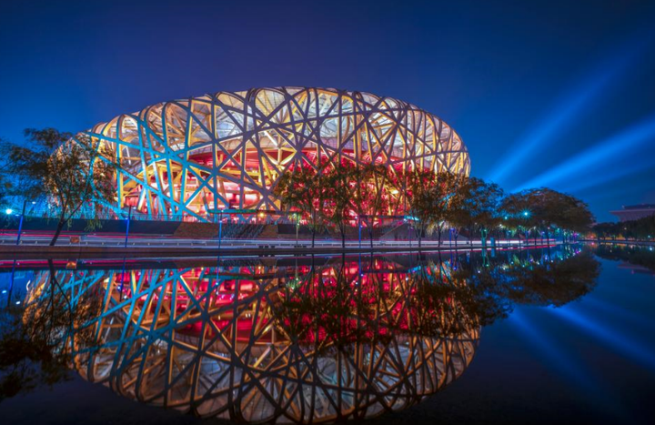
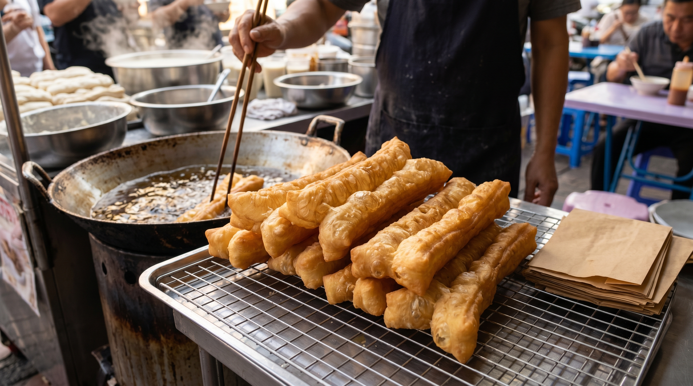
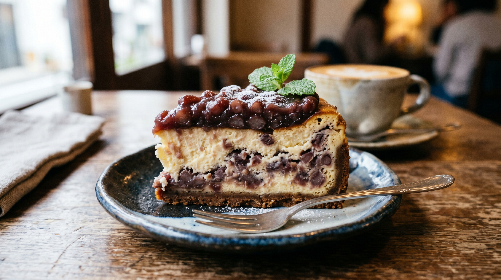
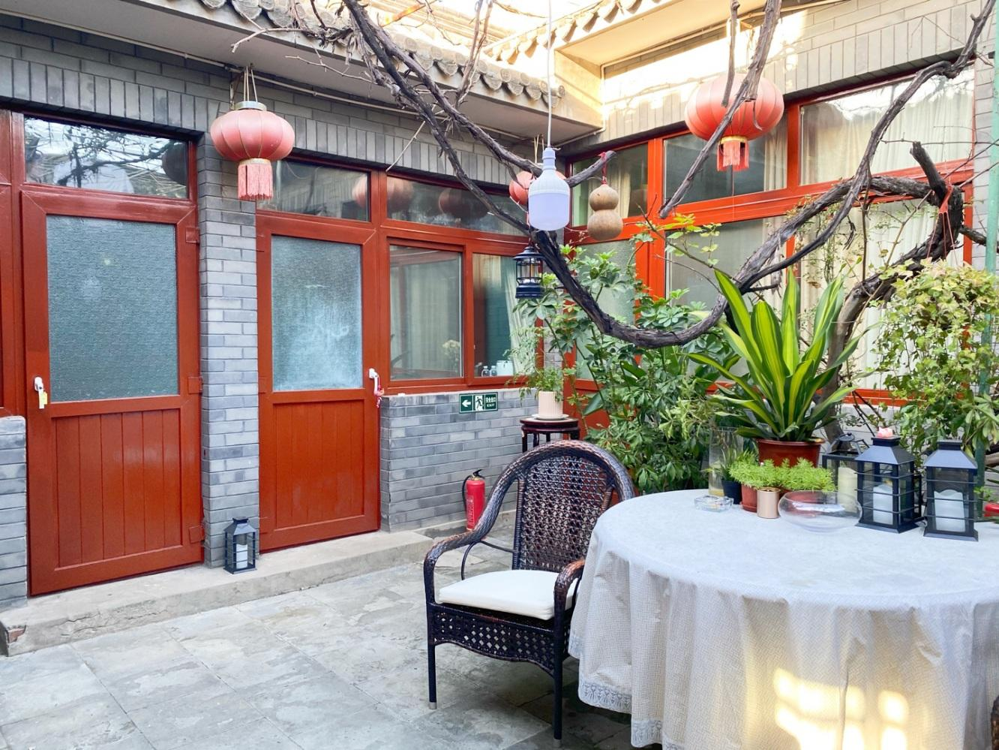

Hey guys! Follow this guide, and you’ll travel Beijing like a local! This is my personal experience after visiting Beijing 6 times, plus scam-avoiding tips from a local Beijing homestay host. Save this guide if you’re traveling to Beijing during the Dragon Boat Festival!
Weather & Packing Tips (May–June)
- ✅ Weather: May 20–28°C; June 25–35°C, occasional short rain – bring a 2‑in‑1 umbrella.
- ✅ Clothes: T‑shirt + light jacket (cool mornings/nights), sunglasses, hat, UV sleeves.
- ✅ Shoes: Comfortable sneakers – you’ll walk 20,000+ steps per day!
- ✅ Essentials: ID card, moisturizer + sunscreen, power bank (no rentals at Forbidden City), small foldable stool (for flag‑raising).
Day 1: Tiananmen → Forbidden City → Jingshan → Nanluoguxiang

Tiananmen Flag Raising: Wake up extremely early! Check the exact time one day before. Queue east of Qianmen for the best view. Bring a small stool and thermos. Don’t fall asleep – you’ll miss it!
Forbidden City: Book tickets 7 DAYS in advance! Route: Meridian Gate → Taihe Hall → Qianqing Palace → Imperial Garden. Don’t miss Yanxi Palace (Western-style crystal palace ruins), Chuxiu Palace (Cixi’s residence), Phoenix Crown in the Treasure Gallery, and mechanical clocks in the Clock Museum.
Jingshan Park: Only ¥2 entry! Climb 10 minutes for a full panoramic view of the Forbidden City – stunning at sunset!
Nanluoguxiang: Fun to walk but very commercial. Great for photos, not for shopping or eating.
Day 2: Mutianyu Great Wall → Summer Palace → Bird’s Nest / Water Cube

Mutianyu Great Wall: Locals’ favorite! Less crowded, beautiful scenery. Cable car to Tower 14, hike to Tower 20 (Hero Slope). Slide down for fun!
Summer Palace: Enter from the New East Gate, go straight to the 17‑Arch Bridge and Bronze Ox. Take a boat to save energy. The long corridor is painted with *Journey to the West* stories.
Bird’s Nest & Water Cube: Best at night when lit up. No need to go inside – photos from outside are enough!
Day 3: Temple of Heaven → Guozijian → Yonghe Temple → Guijie Night Snack

Temple of Heaven: Buy a combined ticket! The Hall of Prayer for Good Harvests is breathtaking. Whisper at the Echo Wall for fun. Squirrels are everywhere!
Guozijian Street: The most artistic hutong in Beijing – red walls and green trees perfect for photos.
Yonghe Temple: Very popular for career and wealth luck! Arrive at 7:30 AM when it opens for fewer people. Free incense inside.
Guijie Street: The king of night snacks – a must for young travelers!
Local Travel Tips
🚇 Morning rush hour (7:30–9:30) is extremely crowded. Take a taxi if you have kids or elders.
🚌 Take official buses to the Great Wall – don’t trust illegal street taxis.
🦆 Try Siji Minfu Peking Duck – you can photograph the Forbidden City corner tower from window seats.
❌ Many museums close on Mondays: Forbidden City, National Museum, Prince Gong’s Mansion…
🎭 Watch a play at Beijing People’s Art Theatre – *Teahouse* and *Thunderstorm* are classics!
Beijing Food Map

Breakfast
Heiyaochang Sugar Fried Pancake, Ciqikou Soybean Milk, Fried Dough Ring

Main Meals
Niujie Jubaoyuan Hot Pot, Haiwanju Zhajiangmian (fried sauce noodles)

Local Snacks
Wuyutai Jasmine Tea Ice Cream, Sanyuan Meiyuan Milk Roll, Red Bean Paste Cheese
Recommended Homestay

Siheyuan Courtyard
A classic Beijing courtyard! Red gate, stone lions, stone yard, pavilion, carvings. Located in Dongcheng District, close to Forbidden City, Tiananmen, Nanluoguxiang, Houhai, Guijie. Only ¥400/night. Rooms available for Dragon Boat Festival – book early!